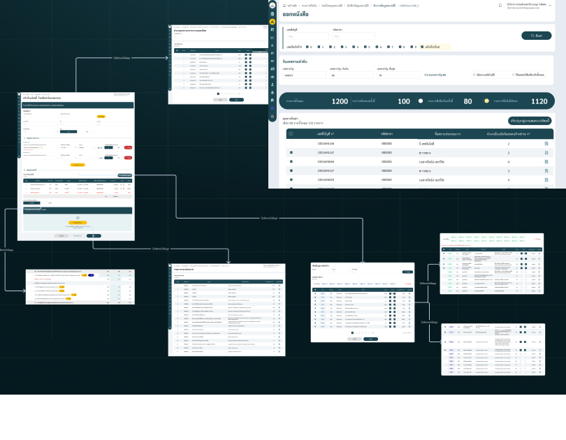
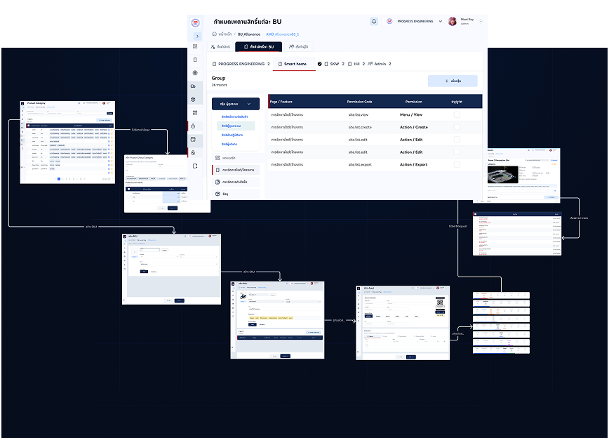

01 / CUSTOMER EXPERIENCE
Q-CHANG Web
จากค้นหาบริการ ถึงจองและกลับมาใช้ซ้ำ
[ PROJECT / SELECTED CASES ]
งานออกแบบและเหตุผลที่อยู่เบื้องหลัง
สามมุมของ Q-CHANG และงานระบบภายใน WCF กับ Smart Asset
แสดง 5 ผลงาน
01 / CUSTOMER EXPERIENCE
จากค้นหาบริการ ถึงจองและกลับมาใช้ซ้ำ

02 / TECHNICIAN EXPERIENCE
สมัครตามความพร้อม พักแล้วกลับมาทำต่อได้
03 / SERVICE & OPERATIONS
การเปลี่ยนวันนัดหนึ่งครั้ง กระทบใครบ้าง

04 / INTERNAL SYSTEMS
ให้กฎ ข้อมูล และข้อยกเว้นทำงานร่วมกัน

05 / ASSET MANAGEMENT
Different assets. One clear workflow.